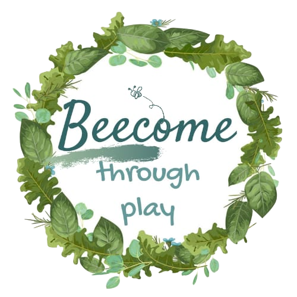

Two ideas for your new website
Both in your own colours, with your bee
These are two complete versions of your website, with every page: home, play therapy, about, workshops, blog, contact and the questionnaire. Have a look around both and tell me which one feels more like you.

1. Playroom
Like a calm, tidy playroom: aqua shelves, building blocks and toy bins, with each service in its own cubby.
Open the Playroom website →
2. Honeycomb
Built around your bee: your logo in the middle of a honeycomb, with hexagon shapes running through every page.
Open the Honeycomb website →Things to try
- Watch the bee fly when a page opens; hover over (or tap) the picture at the top to make it fly again.
- Press Display at the top (or Menu on a phone) to try dark colours and bigger text.
- Try the questionnaire: the bee follows you through the steps. (Please don't press Send unless it's a real answer, it goes to your Google Form!)
- Open it on your phone too.